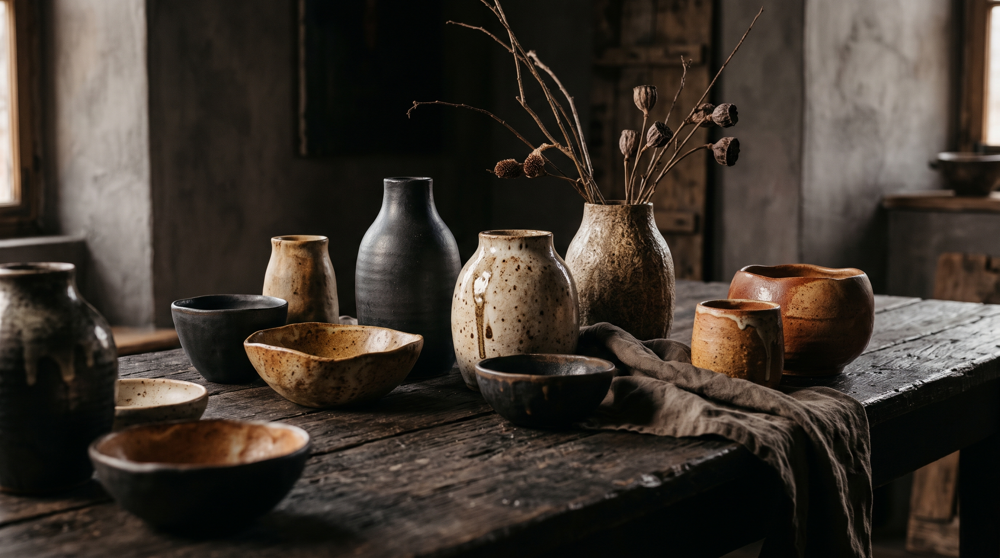

Sztuka Ziemi w Twoich Rękach
Ręcznie formowana ceramika najwyższej jakości. Tworzymy unikalne formy, które wprowadzają ciepło, luksus i harmonię do każdego wnętrza. Odkryj piękno ukryte w detalu.
Skontaktuj się z namiNasza Misja
W CeraSfera wierzymy, że przedmioty codziennego użytku powinny być nie tylko funkcjonalne, ale przede wszystkim posiadać duszę. Nasza pracownia to miejsce, gdzie tradycyjne rzemiosło spotyka się z nowoczesnym, minimalistycznym designem.
Każdy kubek, misa czy wazon jest formowany ręcznie, co sprawia, że nie ma dwóch identycznych egzemplarzy. Naszą misją jest dostarczanie wyrobów, które celebrują unikalność i trwałość naturalnych materiałów.

Kluczowa Oferta

Pojedyncze Formy
Unikalne, ręcznie toczone kubki, misy i talerze. Idealne do codziennych rytuałów, wprowadzające rzemieślniczy akcent na Twój stół.

Zestawy Jadalniane
Skomponowane kolekcje naczyń dla całej rodziny. Spójne kolorystycznie, choć różniące się subtelnymi, ręcznymi detalami.

Boxy Prezentowe
Luksusowo zapakowane zestawy gotowe do wręczenia. Połączenie naszej ceramiki z wyselekcjonowanymi herbatami lub kawą.
Odkryj tajniki rzemiosła, porady dotyczące pielęgnacji ceramiki oraz kulisy powstawania naszych unikalnych kolekcji.
Jak powstaje idealny kubek? Od bryły gliny do porannej kawy
Poznaj etapy ręcznego formowania naczyń na kole garncarskim. Dowiedz się, dlaczego każdy egzemplarz nosi niepowtarzalny ślad dłoni artysty.
Czytaj dalej →
Sztuka nakrywania stołu: jak wprowadzić harmonię do jadalni
Naturalne barwy ziemi i organiczne kształty potrafią całkowicie odmienić charakter domowych posiłków. Zobacz nasze inspiracje na jesienne aranżacje.
Czytaj dalej →
Jak dbać o ręcznie robioną ceramikę, by służyła przez lata
Choć nasze naczynia są wypalane w bardzo wysokich temperaturach, odpowiednia pielęgnacja pozwala zachować ich szlachetne wykończenie na dłużej.
Czytaj dalej →Skontaktuj się z nami
Nasza Pracownia
Adres:
ul. Rzemieślnicza 12
00-123 Warszawa
E-mail:
kontakt@cerasfera.pl
Telefon:
+48 500 600 700